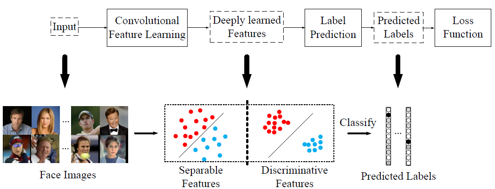
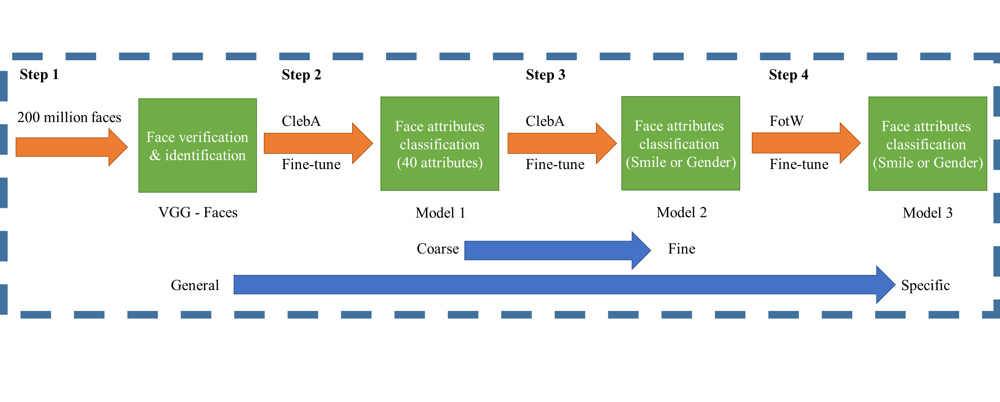
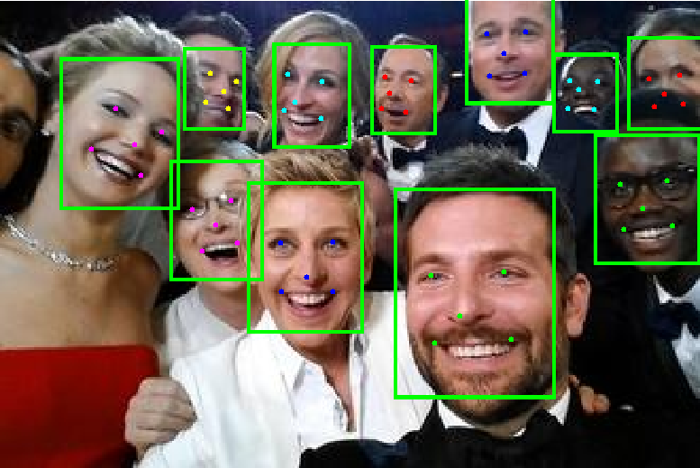

Kaipeng Zhang Master candidate Communication and Multimedia Lab (NVIDIA-NTU AI Lab)School of Computer Science and Information Engineering, National Taiwan University, Taiwan Office: Room 505, CSIE Building, No. 1, Sec. 4, Roosevelt Rd., Taipei 10617, Taiwan (R.O.C.) Email: kpzhang[at]cmlab[dot]csie[dot]ntu[dot]edu[dot]tw
June 8, 2016: I am awarded the prize of "Outstanding Undergraduate Thesis". The thesis is an extension of my previous work with better performance.
May 18, 2016: We are the 1st winner of both tracks for accessories classification and gender and smile classification, on ChaLearn Looking at People Challenge at CVPR 2016.
April 29, 2016: One CVPRW paper has been accepted.
Publications

A Discriminative Deep Feature Learning Approach for Face Recognition
Yandong Wen, Kaipeng Zhang, Zhifeng Li and Yu Qiao
European Conference on Computer Vision (ECCV), 2016. [Paper][Code]

Gender and Smile Classification using Deep Convolutional Neural Networks Kaipeng Zhang, Lianzhi Tan, Zhifeng Li and Yu Qiao
ChaLearn Looking at People (LAP) workshop, CVPRW, 2016. [Paper]

Joint Face Detection and Alignment using Multi-task Cascaded Convolutional Neural Networks Kaipeng Zhang, Zhanpeng Zhang, Zhifeng Li and Yu Qiao
IEEE Signal Processing Letters, vol. 23, no. 10, pp. 1499-1503, 2016 [Paper][Project page & codes]
Selected Awards and Contests
ChaLearn Looking at People Challenge: Accessories Classification (in conjunction with CVPR 2016), Rank: 1st place
ChaLearn Looking at People Challenge: Smile and Gender Classification (in conjunction with CVPR 2016), Rank: 1st place
Outstanding Undergraduate Thesis (Top 1%, only one recipient in our class), 2016
China Undergraduate Mathematical Contest in Modeling, Shanghai, Second Prize
Mathematical Contest in Modeling, Donghua University, Second Prize